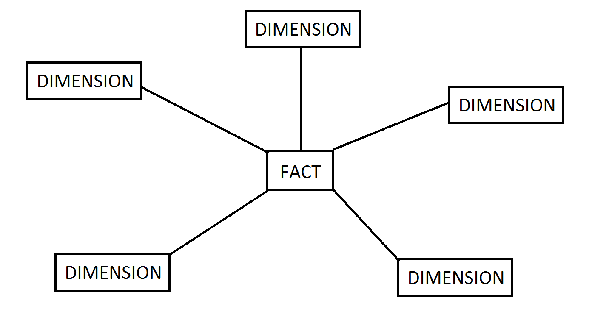

Data Warehouse
기업의 의사 결정을 지원하기 위한 데이터를 모아놓은 통합적인 자료의 집합이다.
이는 주제 중심적으로 모아놓았으며 다양한 운영 시스템에서 추출 및 변형과정이 일어난 읽기 전용 데이터 베이스이다.
특징
주제 중심적 (Subject Oriented)
- 각 조직의 주요 주제를 중심으로 관련 데이터를 구성
통합 구조 (Integrated)
- 업무 기능별로 관리되는 다수의 운영 데이터를 전사적 관점에서 중복을 최소화하고, 모든 업무에 공유할 수 있도록 통합
- 데이터의 정합성과 통일성을 갖는 데이터 구조의 지원
시계열 데이터 (Time Variant)
- 데이터는 오랜 기간 동안 보유되며 과거와 현재의 경향 분석이 가능하도록 모든 순간의 값을 유지
비 휘발성 데이터 (Non Volatile)
- 초기 데이터 적재 이후에는 데이터의 갱신은 발생하지 않고 검색만 가능
- 데이터 갱신 이상에 대한 고려가 필요없으며, 정규화 및 반정규화에 대한 융통성의 증가
모델링 기법
주로 ETL 툴을 이용하여 구축하기도 하며 대부분은 스타 스키마 (Star Schema) 구조로 구성된다.
스타 스키마 (Star Schema)
모델링의 구조가 별 모양이라 스타라는 이름이 명명됨

- 차원 (Dimension) : 수치를 한정짓게 하는 일종의 키 역활을 한다. (필터, 정렬 등등이 포함된다)
- 수치 (Measure) : 실제로 의미있는 값을 지칭한다.
- 팩트 테이블 (Fact Table) : Measure 정보를 포함한 테이블을 말한다.
데이터 마트 (Data Mart)
이해관계가 동일한 사용자 집단에 특화된 데이터 로서 대부분은 DW 로 부터 복제되지만 자체수집 되는 경우도 있다. 특정 사용자 집단에 대한 접근성과 가독성을 높이는데 초점 이 맞춰져 있으며 많은 부분들이 요약된 데이터로 제공 된다.
메타 데이터 (Meta Data)
- 데이타에 대한 데이타라고 할 수 있다.
- 데이터의 위치정보라던지 혹은 데이터간의 관계와 같은 데이터의 명세를 가지고 있는 정보이다.
데이터 마이닝 (Data Mining)
- 대규모로 저장된 데이터 안에서 특정 규칙이나 패턴을 발견해내는 과정을 말한다.
- 일부에서는 데이터 디스커버리라는 용어로 서술하기도 한다 (ex. MicroStrategy)
참고자료
https://middleware.tistory.com/entry/데이터-웨어하우스Data-Warehouse-및-데이터-마트Data-Mart
http://blog.daum.net/_blog/BlogTypeView.do?blogid=0J2W5&articleno=74&_bloghome_menu=recenttext